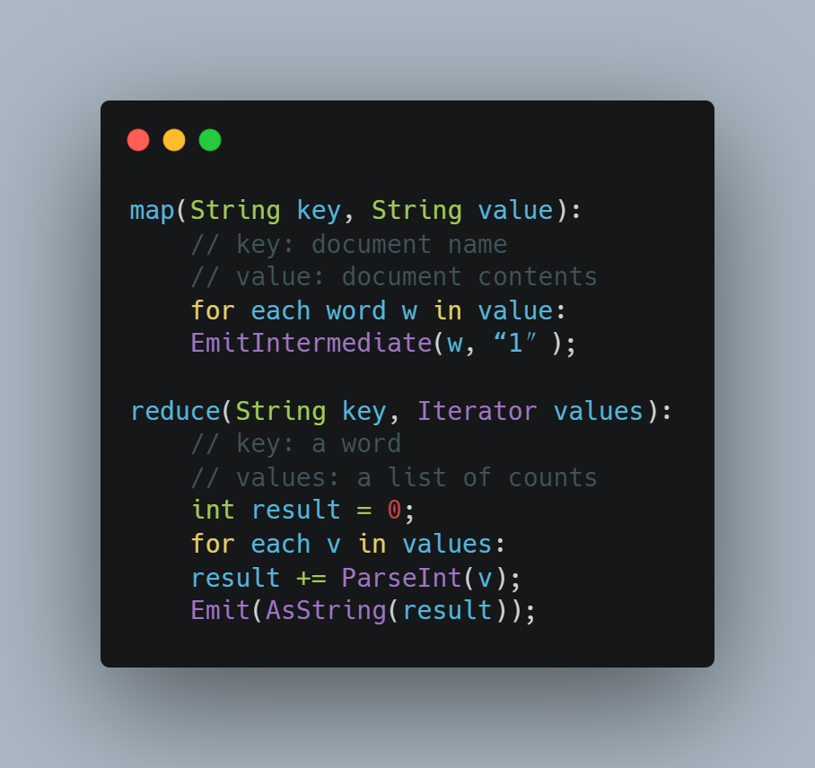

MapReduce 是一个编程模型，也是一个处理和生成超大数据集的算法模型的相关实现。用户首先创建一个 Map 函数处理一个基于 key/value pair 的数据集合，输出中间的基于 key/value pair 的数据集合；然后再创建一个 Reduce 函数用来合并所有的具有相同中间 key 值的中间 value 值。现实世界中有很多满足上述处理模型的例子，本论文将详细描述这个模型。
MapReduce 架构的程序能够在大量的普通配置的计算机上实现并行化处理。这个系统在运行时只关心： 如何分割输入数据，在大量计算机组成的集群上的调度，集群中计算机的错误处理，管理集群中计算机之间 必要的通信。采用 MapReduce 架构可以使那些没有并行计算和分布式处理系统开发经验的程序员有效利用分 布式系统的丰富资源。
我们的 MapReduce 实现运行在规模可以灵活调整的由普通机器组成的集群上：一个典型的 MapReduce 计算往往由几千台机器组成、处理以 TB 计算的数据。程序员发现这个系统非常好用：已经实现了数以百计 的 MapReduce 程序，在 Google 的集群上，每天都有 1000 多个 MapReduce 程序在执行。
在过去的 5 年里，包括本文作者在内的 Google 的很多程序员，为了处理海量的原始数据，已经实现了数 以百计的、专用的计算方法。这些计算方法用来处理大量的原始数据，比如，文档抓取（类似网络爬虫的程 序）、Web 请求日志等等；也为了计算处理各种类型的衍生数据，比如倒排索引、Web 文档的图结构的各种表 示形势、每台主机上网络爬虫抓取的页面数量的汇总、每天被请求的最多的查询的集合等等。大多数这样的 数据处理运算在概念上很容易理解。然而由于输入的数据量巨大，因此要想在可接受的时间内完成运算，只 有将这些计算分布在成百上千的主机上。如何处理并行计算、如何分发数据、如何处理错误？所有这些问题 综合在一起，需要大量的代码处理，因此也使得原本简单的运算变得难以处理。
为了解决上述复杂的问题，我们设计一个新的抽象模型，使用这个抽象模型，我们只要表述我们想要执行的简单运算即可，而不必关心并行计算、容错、数据分布、负载均衡等复杂的细节，这些问题都被 封装在了一个库里面。设计这个抽象模型的灵感来自 Lisp 和许多其他函数式语言的 Map 和 Reduce的原语。我们意识到我们大多数的运算都包含这样的操作：在输入数据的“逻辑”记录上应用 Map 操作得出一个中间 key/valuepair 集合，然后在所有具有相同 key 值的 value 值上应用 Reduce操作，从而达到合并中间的数据，得到一个想要的结果的目的。使用MapReduce 模型，再结合用户实现的 Map 和 Reduce 函数，我们就可以非常容易的实现大规模并行化计算；通过 MapReduce模型自带的“再次执行”（re-execution）功能，也提供了初级的容灾实现方案。
这个工作(实现一个 MapReduce 框架模型)的主要贡献是通过简单的接口来实现自动的并行化和大规模 的分布式计算，通过使用 MapReduce 模型接口实现在大量普通的 PC 机上高性能计算。
MapReduce 编程模型的原理是：利用一个输入 key/value pair 集合来产生一个输出的 key/value pair 集合。 MapReduce 库的用户用两个函数表达这个计算：Map 和 Reduce。
用户自定义的 Map 函数接受一个输入的 key/value pair 值，然后产生一个中间 key/value pair 值的集合。 MapReduce 库把所有具有相同中间 key 值 I 的中间 value 值集合在一起后传递给 reduce 函数。
用户自定义的 Reduce 函数接受一个中间 key 的值 I 和相关的一个 value 值的集合。Reduce 函数合并这些 value 值，形成一个较小的 value 值的集合。一般的，每次 Reduce 函数调用只产生 0 或 1 个输出 value 值。通 常我们通过一个迭代器把中间 value 值提供给 Reduce 函数，这样我们就可以处理无法全部放入内存中的大量 的 value 值的集合。
例如，计算一个大的文档集合中每个单词出现的次数，下面是伪代码段：
Map 函数输出文档中的每个词、以及这个词的出现次数(在这个简单的例子里就是 1)。Reduce 函数把 Map 函数产生的每一个特定的词的计数累加起来。
另外，用户编写代码，使用输入和输出文件的名字、可选的调节参数来完成一个符合 MapReduce 模型规 范的对象，然后调用 MapReduce 函数，并把这个规范对象传递给它。用户的代码和 MapReduce 库链接在一起 (用 C++实现)。附录 A 包含了这个实例的全部程序代码。
尽管在前面例子的伪代码中使用了以字符串表示的输入输出值，但是在概念上，用户定义的Map和Reduce 函数都有相关联的类型：